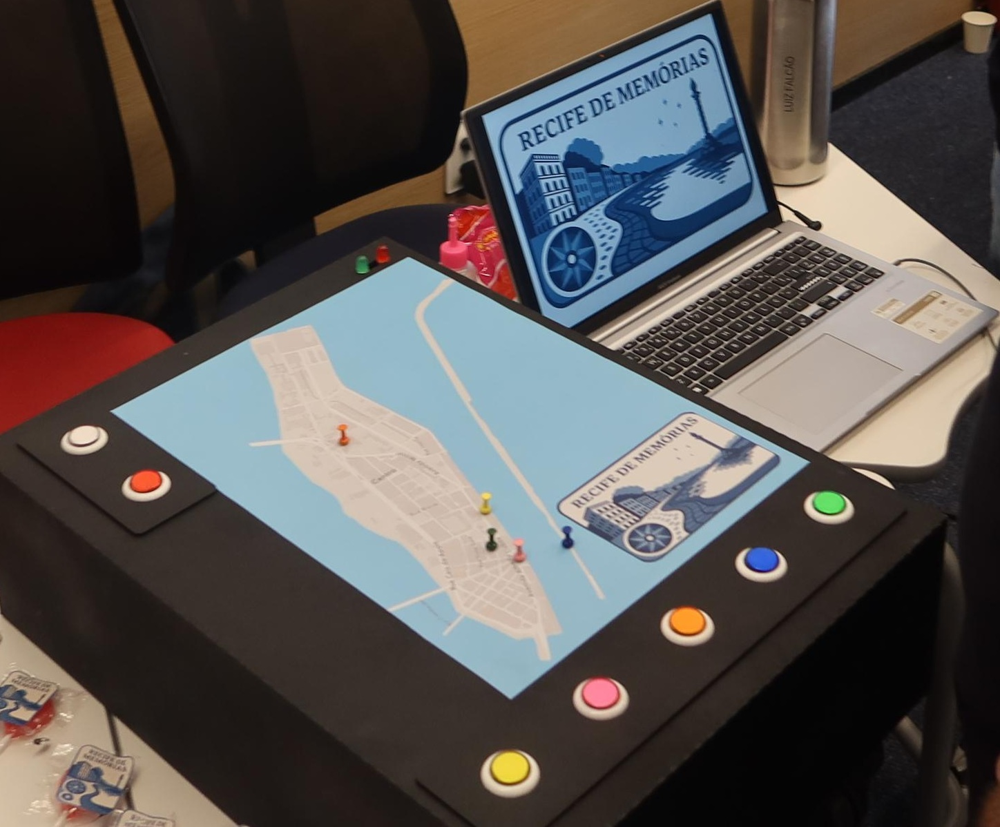

Vida Pet
Vida Pet is a comprehensive, Portuguese quality-of-life program designed to assist pet owners in effectively managing the well-being of their animals.
The platform offers a variety of tools, including pet data, vaccination calendar and health objectives registration, and tailored recommendations for toys, physical activities, and nutrition — customized according to the pet's age and species.
If you're looking for a simpler way to manage your pet's needs, give Vida Pet a try!
The platform offers a variety of tools, including pet data, vaccination calendar and health objectives registration, and tailored recommendations for toys, physical activities, and nutrition — customized according to the pet's age and species.
If you're looking for a simpler way to manage your pet's needs, give Vida Pet a try!

The Legend of Erick
The Legend of Erick is a short 2D puzzle game created in Bitsy, designed for retro gaming enthusiasts. You play as a young knight on a quest to defeat a powerful demon lurking in a vast, mysterious castle.
Inspired by classic 1980s puzzle-adventure titles like The Legend of Zelda, the game features three carefully crafted puzzles, hidden secrets, and a dynamic final boss that can lead to multiple endings — depending on the choices you make.
If you're a fan of old-school gameplay and want to see how far Bitsy can be pushed, The Legend of Erick is a bite-sized but memorable adventure worth exploring!
Inspired by classic 1980s puzzle-adventure titles like The Legend of Zelda, the game features three carefully crafted puzzles, hidden secrets, and a dynamic final boss that can lead to multiple endings — depending on the choices you make.
If you're a fan of old-school gameplay and want to see how far Bitsy can be pushed, The Legend of Erick is a bite-sized but memorable adventure worth exploring!

Recife de Memórias
Recife de Memórias is an interactive project developed in Python and Arduino that combines physical and digital elements to help elderly players, especially those with dementia or Alzheimer's, reconnect with the history of Recife Antigo.
Through sensory-rich cues, like sounds and a map of the island, players recall five cultural landmarks by listening to brief descriptions and selecting the matching colored buttons, then repeating the sequence to stimulate memory and attention.
Recife de Memórias is a meaningful blend of cognitive stimulation and cultural storytelling — a journey through memory worth taking!
Through sensory-rich cues, like sounds and a map of the island, players recall five cultural landmarks by listening to brief descriptions and selecting the matching colored buttons, then repeating the sequence to stimulate memory and attention.
Recife de Memórias is a meaningful blend of cognitive stimulation and cultural storytelling — a journey through memory worth taking!